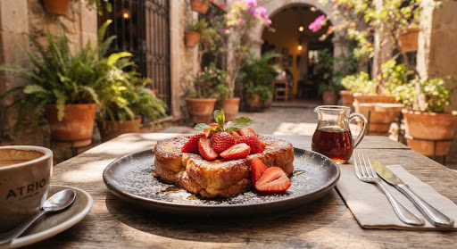
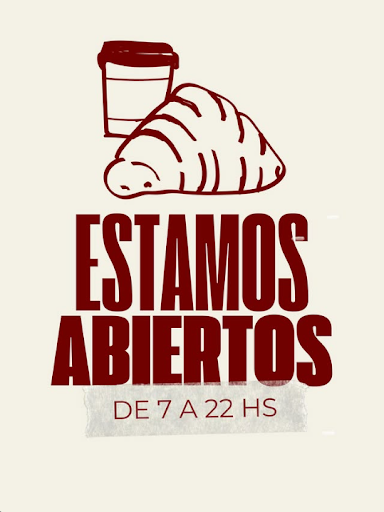
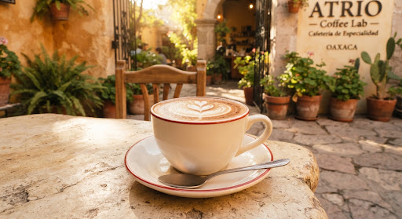
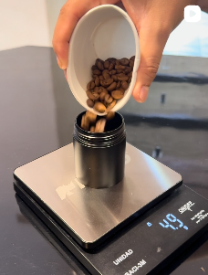

Haz una pausa
para disfrutar.
Café de especialidad, panadería horneada a diario y una barra de extracción calibrada al gramo. Un rincón silencioso y luminoso concebido para reposar en el corazón colonial de Oaxaca.



Rigor en el grano. Serenidad en el atrio.
Tratamos cada lote como una ecuación viva. Desde la molienda adaptada a la humedad matutina hasta el gramaje exacto sobre báscula de micro-precisión.

Molienda y dosificación milimétrica
Cada método de filtrado (V60, Aeropress, Prensa Francesa) se calibra en gramos exactos para resaltar notas florales, cítricos dulces y chocolate amargo propio de la Sierra de Oaxaca.
Un atrio para pausar y contemplar
Diseñado con luz cenital, maderas locales y cantera. Cuenta con tomas de corriente discretas, red Wi-Fi de alta velocidad y sillones confortables que invitan a leer, trabajar o sostener largas conversaciones.
Tomas de corriente en la mesa, Wi-Fi de alta velocidad y terraza con sombra. Se puede pasar a trabajar una mañana entera.
Caficultura Oaxaqueña Directa
Compramos cosechas directamente a productores familiares en Miahuatlán, Putla y Juquila, garantizando precios dignos y trazabilidad transparente en cada taza servida.
Tres pasos y ya estás sentado
No hay registro ni reservación en línea. Se escribe y se contesta.
-
1
Escribes por WhatsApp
Dices si vienes a pasar o si lo quieres para llevar. Con eso sabemos qué preparar.
-
2
Te contestamos qué hay
Si hay mesa y qué salió del horno esa mañana. El pan se hornea dos veces al día, así que conviene preguntar antes de venir.
-
3
Pasas a Bustamante 506D-1
A unas cuadras del Zócalo. Hay corriente y Wi-Fi para trabajar, y terraza con sombra.
Lo que dicen quienes ya pasaron
Todavía no hay reseñas ni calificación en Google.
Por eso no ponemos ninguna aquí. Si ya fuiste, tu reseña es lo que más ayuda a que te encuentre el siguiente que busca café en el centro.
rate_review Ver las reseñas y dejar la tuyaVisítanos en Bustamante 506D-1
Estamos a unas cuadras del Zócalo y del Mercado 20 de Noviembre, en una casona colonial con patio interior sereno, alejado del bullicio peatonal.
¿Listo para probar café de verdad?
Ya sea para trabajar concentrado en nuestro atrio, degustar un filtrado lento con pan recién salido del horno o pedir para llevar en tu camino por el Centro Histórico.